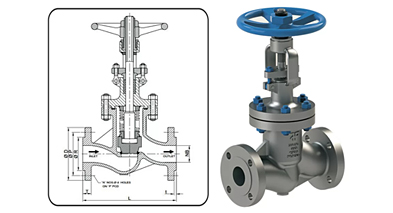

Globe valves are mainly used to regulate and to stop fluid flow through pipes. They differ from valves such as ball valves and gate valves in that they are specifically designed to govern fluid flow and are not limited to shut-off service. Globe valves are so named because older designs exhibited something of a globular body and could be divided into two hemispheres separated by an equator, where the flow changes direction.
If the valve is to be mounted near a pipe bend, the angle-pattern valve body offers two advantages. First, the angle-pattern body has a greatly reduced flow resistance compared to the standard-pattern body. Second, the angle-pattern body reduces the number of pipe joints and saves a pipe elbow.
Piston valves are closing-down valves in which a piston-shaped closure member intrudes into or withdraws from the seat bore. In these valves, the seat seal is achieved between the lateral faces of the piston and the seat bore. Therefore, any erosive damage occurs away from the seating surfaces.
In the Y-body configuration, the stem enters the valve body at 45°, while inlet and outlet remain in line as with the traditional globe valve. The angle pattern is less resistive to flow than other globe valve styles.
Fluid passage through the valve traces a Z-shaped path, enabling the fluid to meet the disc head on. This differs from a gate valve where the fluid passes perpendicularly to the gate. This configuration is sometimes described as a Z-body or Tee pattern valve. Inlets and outlets are situated in line with one another.
Globe valves are actuated by linear or multi-turn actuators. This could be pneumatic or hydraulic using a piston or a diaphragm. Linear actuation is also possible using electric and manual actuators. This could be manual through the use of a multi-turn hand-wheel, or electric using a motor and gear box attached to a rack and pinion or scotch yolk to convert between rotational and linear motion.